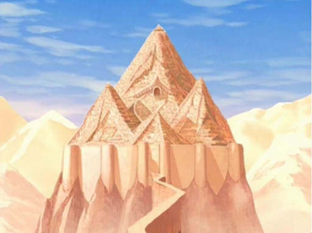
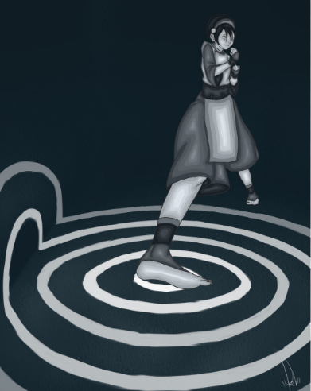

|  |
What is earthbending?Earth bending is one of the four elemental bending arts with the geokinetic ability to manipulate earth and rock in their different forms. Earth is the element of substance. The people of the Earth Nation are diverse and strong, they are persistent and enduring. Oma and Shu were the first earth benders to learn this bending art from the badgermoles. Alternative styles of earth bending:
Seismic SenseSeismic sense is a unique style of earthbending. A technique derived from the blind badger moles, skilled earth benders (like Toph Beifong, Lin Beifong, & Suyin Beifong) are able to sense vibrations in the ground. They see by sensing their surroundings and making a mental image out of it, which allows for a 360-degree field of vision. Return to the main page or the return to the top of the page. HTML Validator |
 |